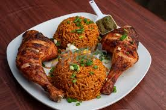

Ghanaian Jollof rice is a delicious and well known West African dish known for its vibrant flavors and unique preparation. It is a one-pot rice dish cooked with a variety of ingredients that include tomatoes, onions, and bell peppers, creating a rich and aromatic tomato-based sauce. The dish is then seasoned with a blend of spices, such as thyme, curry powder, and bay leaves, providing a distinctive taste that sets it apart.
What makes Ghanaian Jollof rice stand out is not just its flavorful profile but also the method of preparation. The rice is typically cooked in the flavorful tomato sauce, allowing it to absorb all the savory goodness and resulting in a well-seasoned and colorful dish. Often served at celebrations, gatherings, and family meals, Ghanaian Jollof rice is a beloved culinary tradition that showcases the rich and diverse flavors of West African cuisine.
Gather all the ingredients and chop the vegetables (tomatoes, onions, bell peppers). Rinse the rice under cold water.
In a blender, combine tomatoes, onions, and bell peppers. Blend until smooth to create the base sauce.
Heat vegetable oil in a large pot. Sauté chopped onions, minced garlic, and grated ginger until fragrant.
Stir in tomato paste and cook for a few minutes. Add thyme, bay leaves, curry powder, salt, and pepper. Mix well.
Pour the blended tomato and pepper mixture into the pot. Allow it to simmer and reduce until the sauce thickens.
Add the rinsed rice to the pot and stir to coat it in the sauce. Pour in the stock or broth, ensuring it covers the rice.
Cover the pot with a tight-fitting lid and simmer on low heat. Allow the rice to absorb the liquid and cook until tender. Stir occasionally to prevent sticking.
Taste the rice and adjust the seasoning if necessary. Add more stock or water if the rice needs more cooking.
Once the rice is cooked and the liquid is absorbed, fluff the rice with a fork. Garnish with chopped scallions or parsley if desired. Serve hot.
Enjoy your delicious Ghanaian Jollof rice!